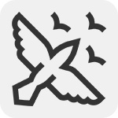
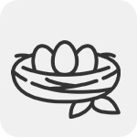
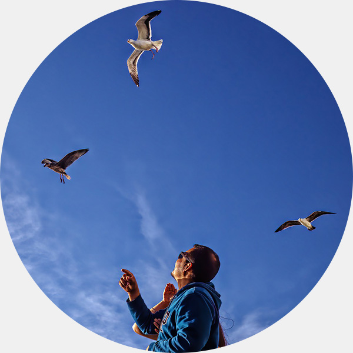
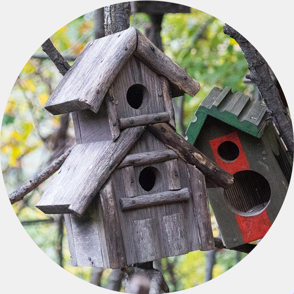
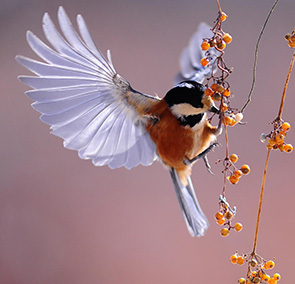
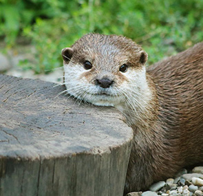
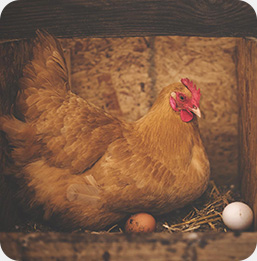
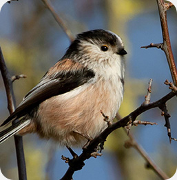
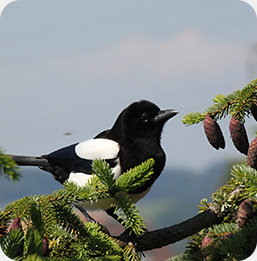
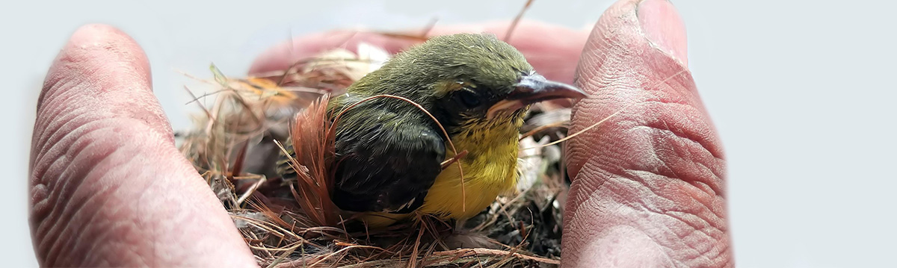

본문컨텐츠영역 협회활동  구조활동 야생조수류의 구조를 위해 신고센터를 운영합니다.  교육활동 학생 및 일반인을 대상으로 체험학습을 진행합니다. 후원하기 후원금은 야생조수류의 보호를 위해 사용합니다. 캠페인 새에 대한 사랑과 관심으로 보존하는 우리 자연문화재  겨울철새 모이·먹이주기 겨울에는 철새들이 많이 찾아오는 지역을 중심으로 매년(11월에서 익년 3월 사이) 새 먹이주기 운동을 펼치고 있습니다. 자세히  인공새집 달아주기 나무의 소실로 둥지를 틀지 못하는 새들의 번식을 도와주는 자연보호활동입니다. 자세히 생태도감 이 땅의 자연유산 천연기념물과 함께  야생조류 도감 #딱따구리 #팔색조 #바다오리 #두견이 한국에 서식하는 천연기념물 야생조류에 관한 도감입니다. 자세히  야생수류 도감 #사향노루 #산양 #반달가슴곰 #수달 한국에 서식하는 천연기념물 야생수류에 관한 도감입니다. 자세히 뉴스레터 자연과 더불어 사는 삶의 이야기 왼쪽 오른쪽 9월호 메인  세기적 대학살, AI 가금류 생매장 전국에 인수공통전염병 조류인플루엔자(Avian Influenza, AI)가 다시 창궐해 매일 수천 ... 8월호 메인  숲 속의 작은 요정 ‘오목눈이’ 흔한 우리나라 텃새인 오목눈이는 이른 봄부터 부지런히 둥지를 준비하고 있다. 몸길이에 ... 7월호 메인  ‘까치밥’ 예찬 국어사전은 ‘까치밥’을 “날짐승들이 한겨울에 먹으라고 따지 않고 남겨둔 감”으로 설명합니다 ... 공지사항 ‘이 땅의 자연유산 천연기념물과 함께' 특별전시회 개최 본 협회에서는 2003년부터 문화재청과 함께 ‘이 땅의 자연유산 천연기념물과 함께’라는 주제로 천연기념물의 ... 2022-07-09 2022년도 지회 국고 보조금사업 교부결정 지급 발송공문 올해 전국 지회 교부금이 결정되어 각 지회로 공문을 발송하였습니다. 첨부한 서류를 작성하여 중앙회로 우편 ... 2022-07-09 더보기 구조 · 밀렵 문의 여러분의 적극적인 제보를 기다립니다. 02-749-4747 